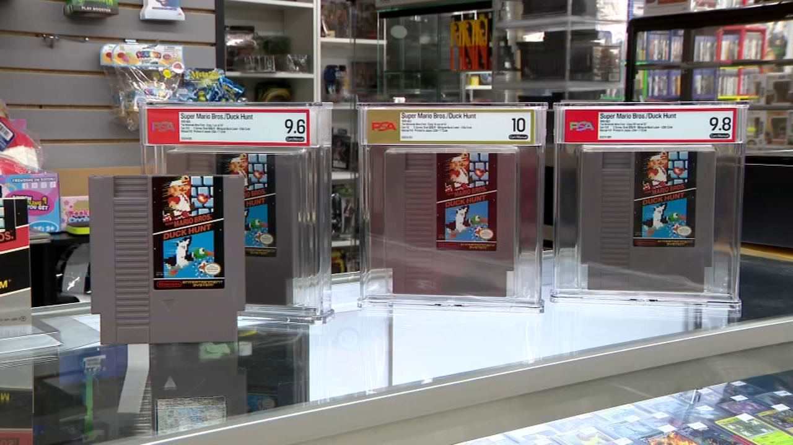

A remarkable Nintendo discovery has been made in Waukesha, Wisconsin
2026, August 12

A remarkable Nintendo discovery has been made in Waukesha, Wisconsin
2026, August 12
United States
A remarkable Nintendo discovery has been made in Waukesha, Wisconsin, where collectors uncovered a box containing 97 pristine copies of Super Mario Bros./Duck Hunt for the original Nintendo Entertainment System (NES). What initially looked like a box of old games turned out to contain a previously undocumented variant of one of Nintendo's most famous titles.🕹️ Why are they so unusual?
The cartridges appear to date from 1993, even though Nintendo had officially stopped producing Super Mario Bros. in 1991. That unusually late production date is one of the key reasons collectors believe this particular batch represents a distinct variant.
The games were discovered by collector Jason Ganos and pop-culture store owner Kevin Braun. Braun had acquired the box years earlier from a family that apparently regarded the games as little more than scrap and had subsequently stored them away.
⭐ Their condition is extraordinary
The cartridges were described as being in 'absolutely pristine' condition. Five were submitted to Professional Sports Authenticator (PSA) and received a perfect 10 grade — reportedly the first NES cartridges ever to receive that score.
That is particularly remarkable because Super Mario Bros./Duck Hunt itself was extremely common. The rarity here isn't simply the game — it's the specific production variant, the late manufacturing date and the exceptional condition.
💰 What are they worth?
Their eventual value is difficult to predict. Collectible video games can command very high prices when they combine:
an unusual or previously unknown variant;
extremely low surviving numbers;
exceptional condition;
professional grading; and
strong collector demand.
Most of the 97 cartridges are being put up for an online auction running from 14 August until 9 September 2026. The owners plan to retain a few, while some proceeds are intended for a future charity auction.
🤔 Is this really a 'rare Mario game'?
There's an important distinction. The game itself isn't rare — Super Mario Bros. is one of the most widely distributed NES games ever made. The discovery is interesting because of the specific cartridges and their production history, rather than because someone found 97 copies of an inherently scarce game.
That distinction has also prompted some scepticism among retro-gaming enthusiasts, with some questioning whether the cartridges deserve the 'ultrarare' label and whether their unusual characteristics necessarily translate into enormous monetary value.
In short: someone essentially found a forgotten box of nearly 100 ordinary-looking Mario cartridges in a Wisconsin warehouse — only to discover that they may represent a previously undocumented 1993 production variant, with five examples achieving a perfect PSA 10 grade. That's quite a bit better than finding a box of old cartridges in the attic and discovering they're worth about $20.